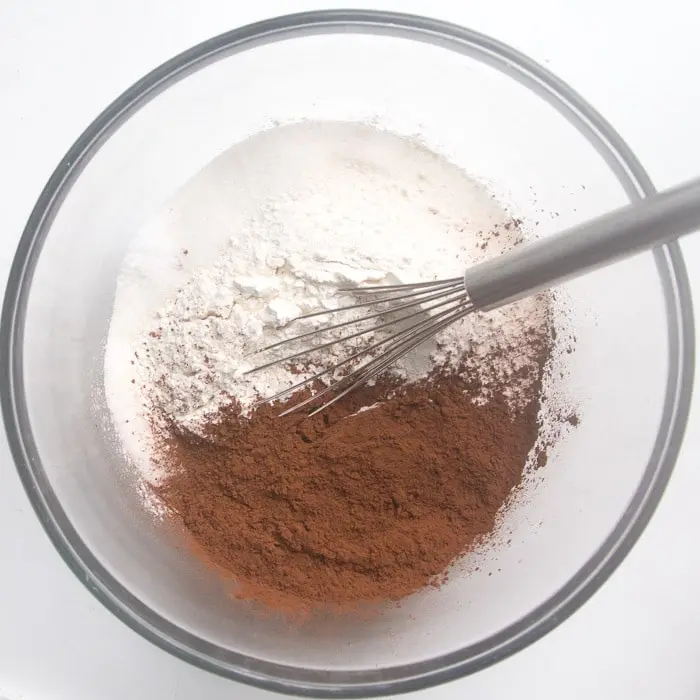
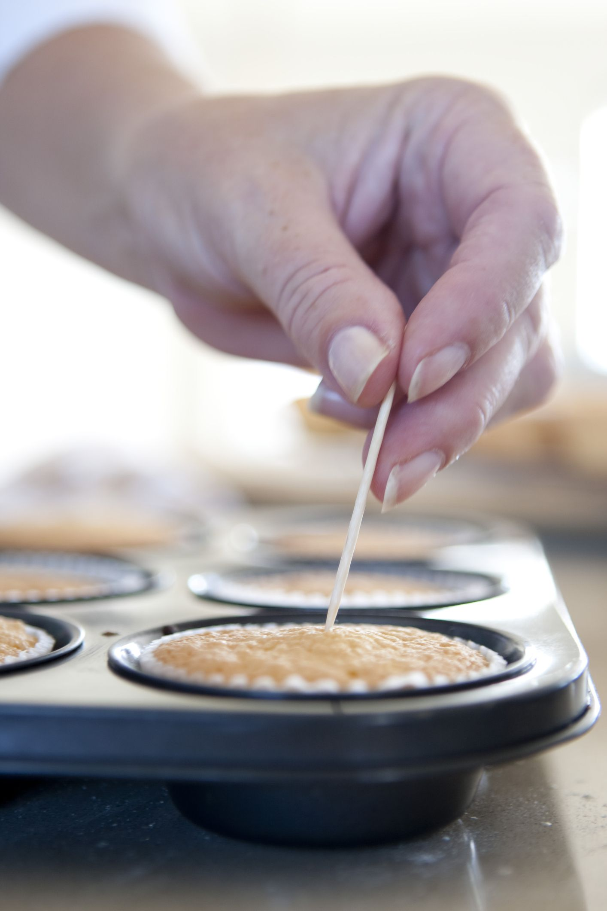
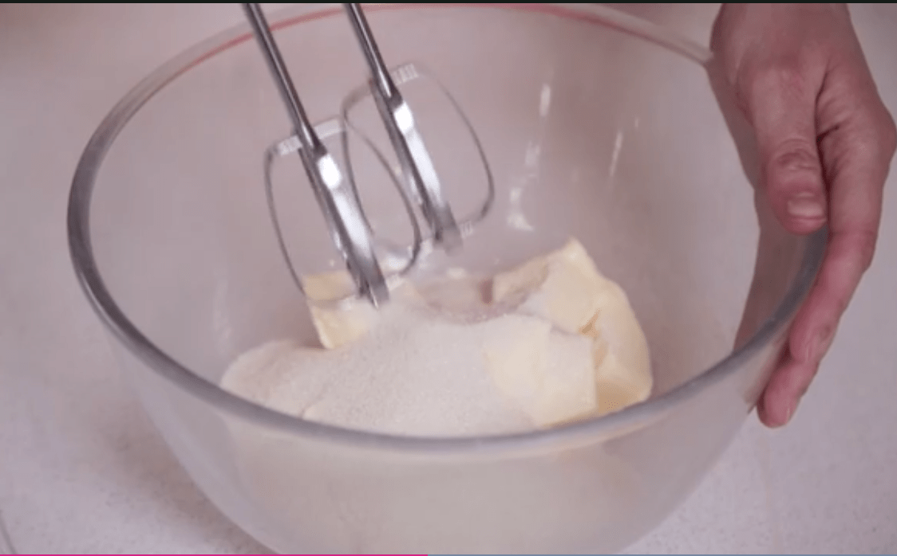
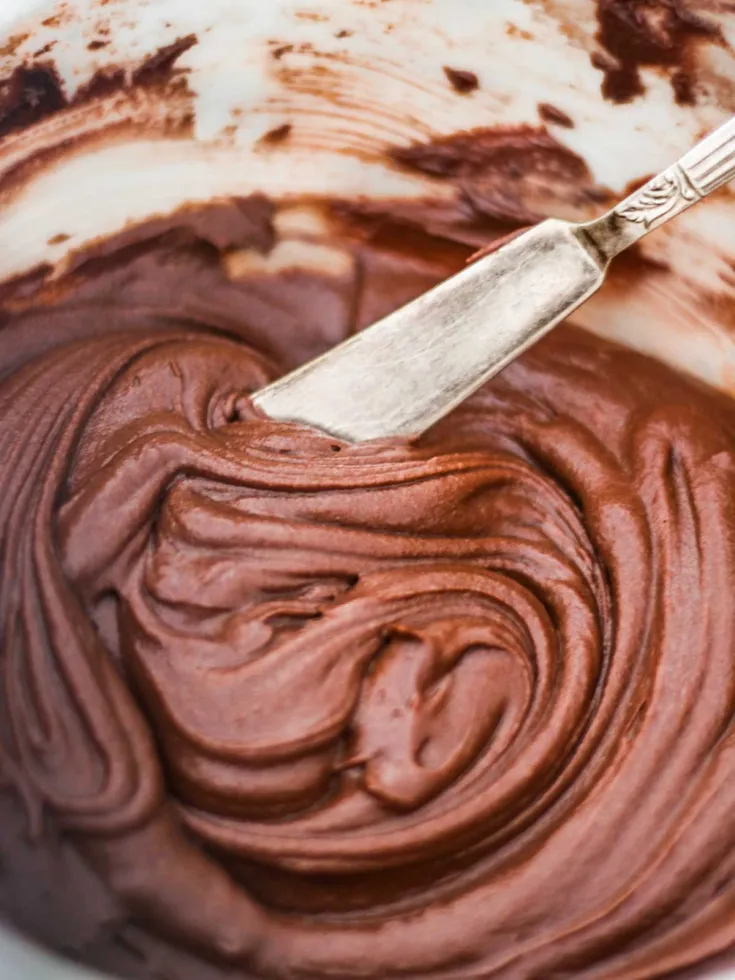

Homemade Hostess Cupcakes

Description
These copycat Hostess cupcakes are a treat for all chocolate lovers:
chocolate cupcakes filled with cream and topped with chocolate frosting and
that signature white icing finish.
Ingredients
Cupcakes:
- 3 cups flour
- 3 cups white sugar
- 1 cup unsweetened cocoa powder
- 2 teaspoons baking soda
- 1 teaspoon salt
- 2 large eggs
- 1 cup milk
- 1 cup vegetable oil
- 1 cup water
- 1 teaspoon vanilla extract
Filling:
- 2 cups powdered sugar
- ¼ cup butter, softened
- ¼ cup shortening
- 3 tablespoons milk
- 1 teaspoon vanilla extract
- 1 pinch salt
Frosting:
- 1 cup chocolate frosting
- ¾ cup vanilla frosting
Steps
- Preheat the oven to 375 degrees F (180 degrees C).
Line 36 muffin cups with paper cups.
- Whisk together flour, white sugar, cocoa, baking soda,
and salt in a large bowl.
Add eggs, milk, oil, water, and vanilla extract.
Mix with an electric mixer at low speed until smooth, about 2 minutes.
Fill prepared muffin cups a little over half full
(use a #20 or 3-tablespoon scoop).

- Bake until a toothpick inserted in centers comes out clean, 18 to 22 minutes.
Transfer from pans to wire racks to cool completely.

- Meanwhile, for the filling, combine powdered sugar, butter, shortening, milk,
vanilla extract, and a pinch salt in another large bowl. Using clean beaters,
mix with an electric mixer at high speed until fluffy, about 5 minutes.
Insert a large round tip into a pastry bag; fill with filling.
Push tip through top of each cooled cupcake to fill;
wipe excess frosting off to create a smooth top.

- Frost tops with chocolate frosting.
Insert a small round tip into a clean pastry bag;
fill with vanilla frosting. Pipe frosting across tops of cupcakes in loops.
Transfer cupcakes to an airtight container.
Store at room temperature up to 3 days or freeze up to 3 months.
